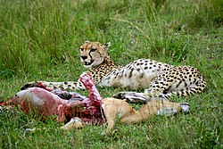
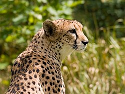

გეპარდი ანუ ავაზა მცირე კატებში ყველაზე დიდი და ძუძუმწოვრებში ყველაზე სწრაფია. მისი ჩვეულებრივი სირბილის სიჩქარე 80კმ/სთ-ია ხოლო მსხვერპლის დევნისას სისწრაფე 112 კმ/სთ-ში აღწევს, თუმცა გეპარდს ამგვარის სიჩქარის ხანგრძლივად შენარჩუნება არ შეუძლია. გეპარდს აქვს გრძელი, მოხდენილი კიდურები, რომლებიც დიდი ნახტომების გაკეთების საშუალებას აძლევს. გეპარდი მსუბუქი წონისაა და განსაკუთრებულად მოქნილი ხერხემალი აქვს. გეპარდისთვის დამახასიათებელია თავისუფალი მოძრაობა მხრებსა და ბარძაყის ძვლებში. იგი ნახტომში იჭერს მსხვერპლს. დიდი ზომის ნადავლს ავაზა ბრჭყალებით განგმირავს გვერდიდან ან უკნიდან, ხოლო მას შემდეგ რაც მსხვერპლი ძირს ეცემა, იგი ყელში სწვდება, ანაწევრებს გვამს და ერთიანად ხარბად შთანთქავს. როდესაც გეპარდი შეშინებულია, ან უცნობი მამლის მოახლოებას ამჩნევს, თავს ხრის და იღრინება. თუ ამის შემდეგ მტერი თავს არ ანებებს, გეპარდი ბრძოლაზე გადადის და ზოგჯერ სიკვდილამდეც იბრძვის.
ავაზა მხოლოდ თავის ნანადირევს მიირთმევს. ამასთანავე იგი უხმოდ დაუთმობს თავის მსხვერპლს მასზე უფრო დიდი ზომის კატებს. ლეკვი გეპარდები ძალიან უსუსურნი არიან, რის გამოც ისინი ხშირად სხვა მტაცებლების მსხვერპლი ხდებიან. ხშირად გეპარდის ლეკვებს საფრთხეში საკუთრივ მათი ოჯახის წარმომადგენლები აყენებენ: დაწყვილების პერიოდში მამალი გეპარდი დედალს ტყვეობაში ამყოფებს, რის გამოც ძუ გეპარდს არ აქვს საშუალება გამოკვებოს თავისი ლეკვები. ასეთ შემთხვევაში ლეკვები ხშირად შიმშილით იხოცებიან. დღეისათვის გეპარდების უმრავლესობა აღმოსავლეთ და სამხრეთ აფრიკის ტერიტორიაზეა თავმოყრილი. ბევრი სხვა დიდი კატის მსგავსად, მათაც გადაშენების საფრთხე ემუქრებათ, ვინაიდან ადამიანები დღესაც ანადგურებენ მას.
